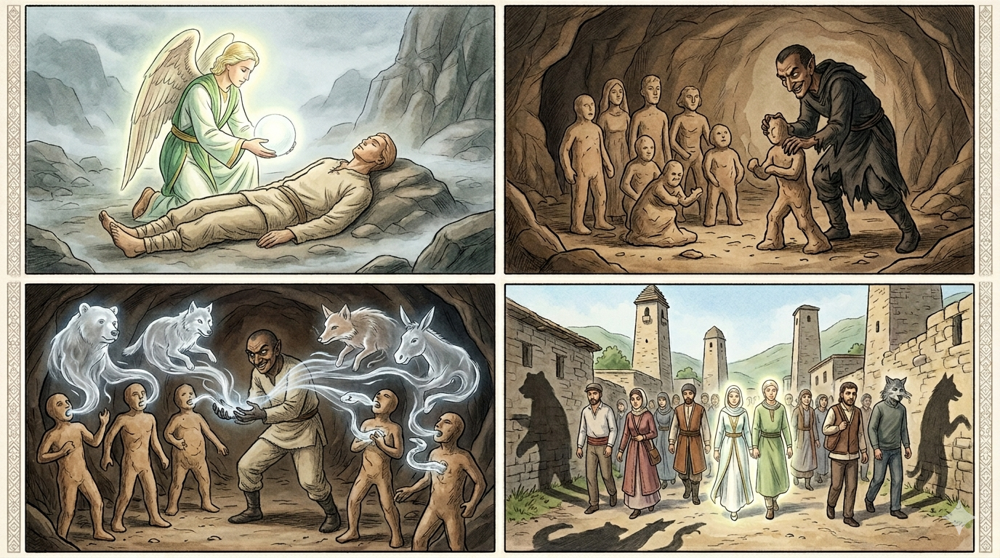

И.А. Дахкильгов. Хьехаме дувцарш - поучительные рассказы-притчи.
И.А. Дахкильгов. Хьехаме дувцарш - поучительные рассказы-притчи. Из ингушского фольклора.

Оакхарой оамалаш йоахка нах
Даллас лоабатах Адам хьаваьчул тӀехьагӀа Джабраил-малейкага ялсамалара цхьа са доаладайтад. Из са чу а деллад. Яхь лаьца лелача шайтӀо а лаьрхӀад цхьа адам хьаде. ЦаӀ ца веш, лоабатах цхьа иттех ваьв. Ӏочудолла са дий? ШайтӀа ялсамала чудутаргдар малав? Кхы де хӀама доацаш, шайтӀо оакхарой синош Ӏочудийхкад, - ча, бордз, цогал, нала, вир, бӀехал, иштта кхыдараш а хьалувцаш. Цигара хьадоагӀа: бакъвола саг наггахьа мара нийса ца валар, дукхагӀбараш цхьаццача оакхарой оамалаш йолаш хилар.
РУССКИЙ
Звероподобные
Слепили из глины Адама. Ангел Джабраил привел из рая душу. Ее и вложили в первого человека. Шайтан, всегда споривший с Всевышним, тоже решил создать человека и слепил не одного, а с десяток. А где взять души? Кто пустит шайтана в рай? Делать нечего, и шайтан стал брать души разных зверей: медведя, волка, лисы, кабана, осла, змеи и других - и вкладывать их в свои творения. Вот почему настоящих людей мало, но зато много по облику человекоподобных, а по нутру - звероподобных.
ENGLISH
Beast-like creatures
Adam was made from clay. The angel Jibril brought a soul from Paradise. This soul was then placed within the first man. Shaitan, who had always argued with the Almighty, also decided to create a human being — and not just one, but a dozen. But where could he find souls? Who would let Shaitan into Paradise? With no other option, Shaitan took the souls of various beasts, such as bears, wolves, foxes, wild boars, donkeys and snakes, and placed them within his creations. This is why there are few true humans, but many who appear human yet are beast-like at heart.
НОХЧИЙН
Акхаройн амалш йохку нах
Далла сацкъарх Адам схьавинчул тӀаьхьа Джабраил-малике йалсаманера цхьа са даладайтина. Иза са чу а доьллина. Йахь лаьцна лелачу шайтӀано а сацам бина цхьа адам схьадан. Цхьаъ ца веш, сацкъарх цхьа иттех вина. ДӀачудолла са дуй? ШайтӀа йалсамане чудуьтурдерг мила ву? Кхин дан хӀума доцуш, шайтӀано акхаройн синош дӀачудехкина, - ча, борз, цхьогал, нал, вир, лаьхьа, иштта кхидерш а схьалуьйцуш. Цигара схьадогӀа: бакъволу стаг наггахь бен нийса ца валар, дукхахберш цхьаццачу акхаройн амалш йолуш хилар.
ПОГОВОРКИ
Дийнахьа бага а сеге, е гаргалол. Роднись днем или при свете факела.Дика дагалацар а маьл ба. Иметь хорошие помыслы – уже благо.Дикадар дечо ше къонах хиларах ду, водар дечо ше эсала йовсар хиларх ду. Творящий добро творит его потому, что он мужчина, а творящий зло творит его потому, что он ничтожество.Кхерий тӀа багӀача наьха дегаш Ӏаьржа хул. У людей, живущих на камнях, сердца бывают завистливыми.Ладар соцаргда догӀа сецача; сагах йоалла ладарал дӀаяргья, из велча. Крыша течь перестанет, когда дождь пройдет, а человек от своей никчемности избавится, только когда умрет.Наьха вонах ца кхийрар ший дикага кхийнавац. Кто не боялся вреда от людей, тот не достиг благополучия.Оапашк нахах тешанза лел. Лгун людям не верит.Питаме саг цӀагӀа а везац, ара а гоама ва. Коварного человека дома не любят, а вне дома ненавидят.Товш доаца гӀалаташ дукха дувцача сага къинош дукха хул. Къинош дукха долча сага эхь хетац. Эхь ца хета саг хьарамча хӀамах къахкаш хилац. Много грехов у того, кто муссирует чужие недостатки. Накопивший грехи теряет стыд и совесть. Потерявший их может сделать любую пакость.Хийла дикача даь коа во жӀали кхийнад. Нередко и на дворе хорошего хозяина вырастает плохая собака (плохой потомок).Хьога цо нах бувце, хьо нахага вувц цо. Знай: тот, кто сплетничает с тобой о других, с ними сплетничает о тебе.ШайтӀо аьннад, йоах: “Далла лорадолда со адама шайтӀаех!”. Говорят, шайтан сказал: “Упаси меня бог от людей-шайтанов!”.Ший цӀагӀа балийна вола саг наха а балийна верз. Несущий горе своей семье опасен для всех.Ӏаьхар бешшехьа хул е кӀай, е Ӏаьржа, е къоарза. Ягненок с рождения бывает или белым, или черным, или пестрым.